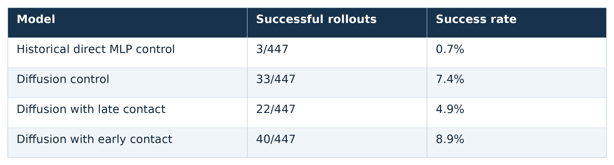
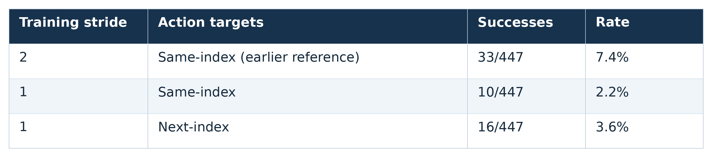
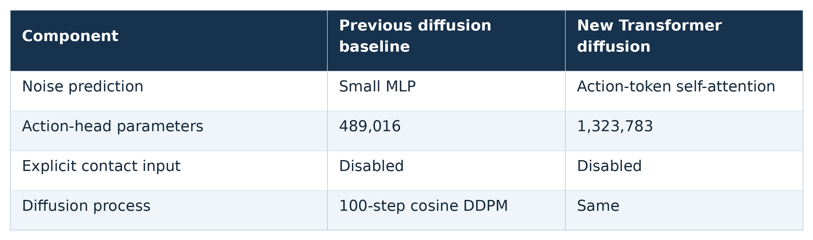
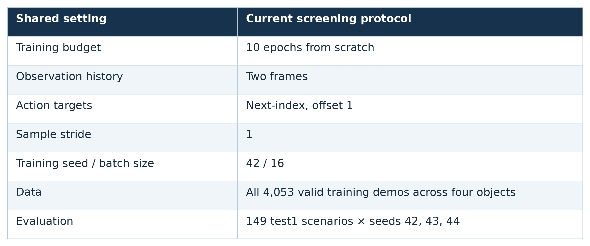
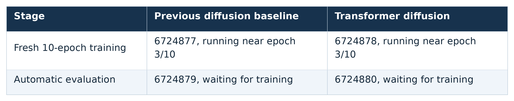

Slide 1 — Diffusion improves control
Exact table values from the slide document. High-resolution PNG with a white background.

Download PNG · 2600×704
Download each GIF, table, or diagram for its slide, or download the complete portable bundle.
View PNG tables · Download all media · Source provenance and slide mapping
Exact table values from the slide document. High-resolution PNG with a white background.

Download PNG · 2600×704
Exact table values from the slide document. High-resolution PNG with a white background.

Download PNG · 2600×576
Exact table values from the slide document. High-resolution PNG with a white background.

Download PNG · 2600×772
Exact table values from the slide document. High-resolution PNG with a white background.

Download PNG · 2600×1088
Exact table values from the slide document. High-resolution PNG with a white background.

Download PNG · 2600×516